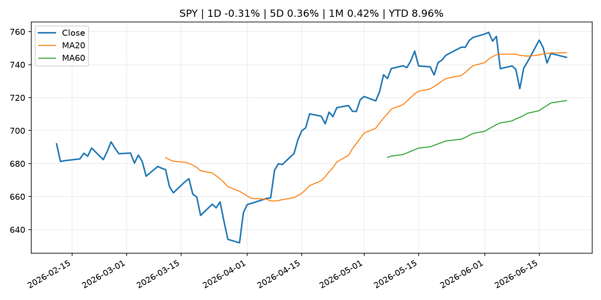
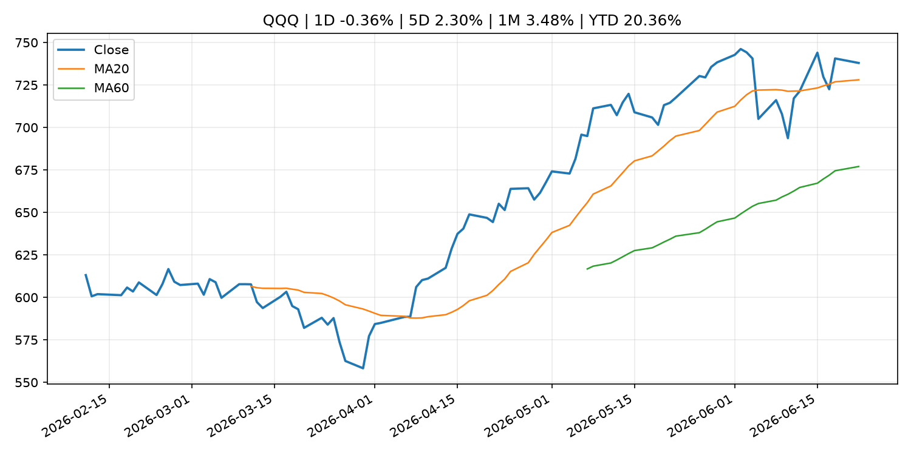
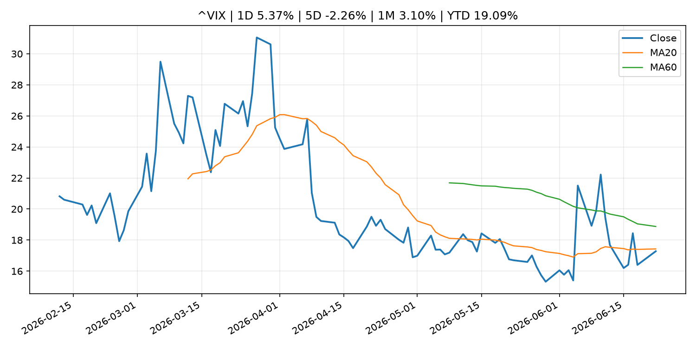
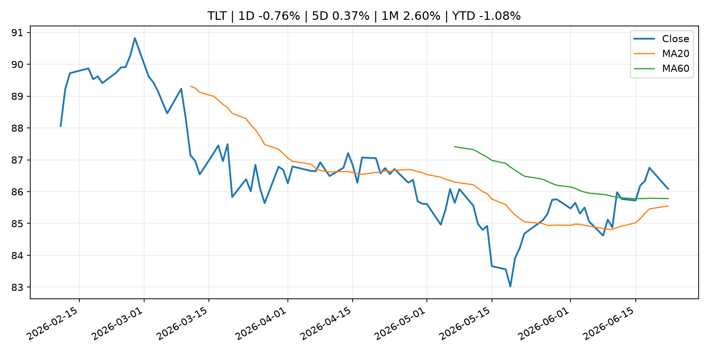
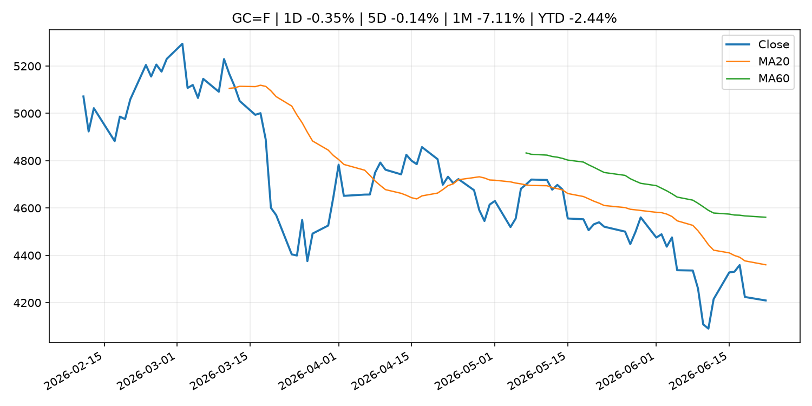
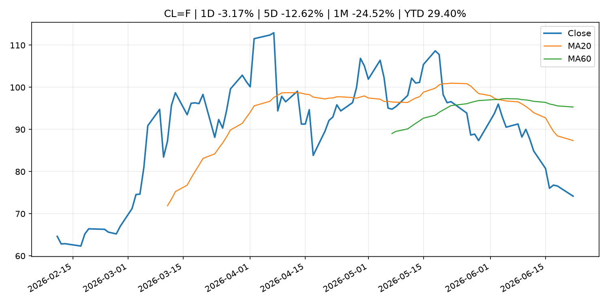
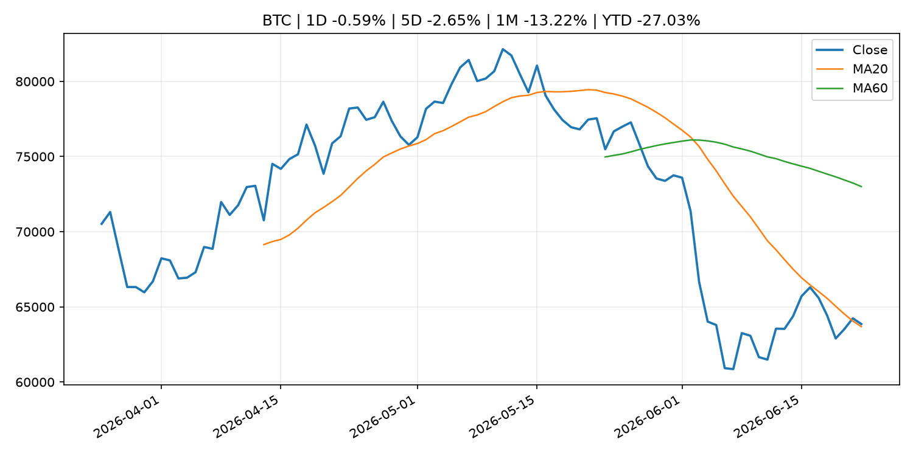
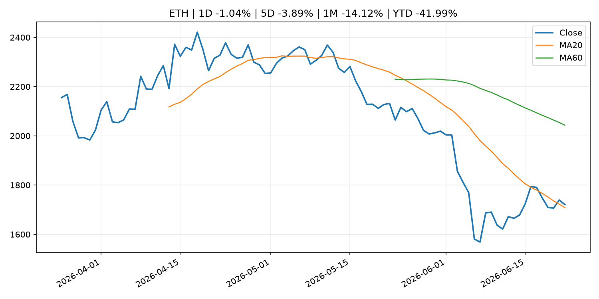
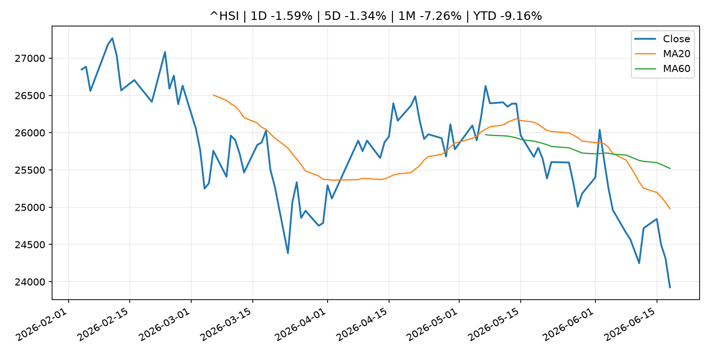

Global Macro Morning Briefing - 2026-06-23
Not financial advice / 非投资建议。
0. 今日总览
- 市场状态：mixed。市场信号不足，暂不判断明确状态。 但存在信号冲突，需要降低单一叙事置信度。
- 今日三大主线：
- fiscal_policy: Crypto's second U.S. lobbying front — tax policy — sees industry push on mining, staking
- earnings: Can anyone join Musk in the trillionaire club? Zuckerberg has best shot, according to prediction markets
- crypto_market_structure: MoneyGram joins Solana as validator amid stablecoin payment push
- 一句话结论：今日晨报重点关注：财政和贸易政策会影响增长、通胀、企业利润和跨境资本流。；大型科技股盈利和资本开支会影响纳指、半导体和 AI 交易主线。。跨资产方面，SPY 1D -0.31%；QQQ 1D -0.36%；^VIX 1D 5.37%；TLT 1D -0.76%；GC=F 1D -0.35%；CL=F 1D -3.17%；BTC 1D -0.59%；ETH 1D -1.04%；市场信号不足，暂不判断明确状态。 但存在信号冲突，需要降低单一叙事置信度。政策、通胀、利率、美元、美债、能源和加密监管仍是主要观察线索。所有结论仅基于公开数据与短摘要整理，不构成投资建议。
1. 隔夜跨资产市场
- 美股：SPY 1D -0.31%，QQQ 1D -0.36%，整体趋势需结合 VIX 和利率确认。
- 美债/美元：TLT 1D -0.76%，美元指数 1D 0.14%，是判断折现率压力的核心线索。
- 黄金/原油：黄金 1D -0.35%，原油 1D -3.17%，用于观察避险、通胀和地缘风险。
- 加密：BTC 1D -0.59%，ETH 1D -1.04%，关注是否独立于纳指走出加密自身行情。
- 港股/A股：恒生 1D -1.59%，沪深300/上证 1D n/a，重点看中国政策预期与人民币线索。
- 风险观察：关注后续数据是否确认当前跨资产信号。
US_EQUITY
| symbol | latest close | 1D | 5D | 1M | YTD | trend |
|---|---|---|---|---|---|---|
| SPY | 744.39 | -0.31% | 0.36% | 0.42% | 8.96% | range_bound |
| QQQ | 737.95 | -0.36% | 2.30% | 3.48% | 20.36% | uptrend |
| DIA | 517.08 | 0.30% | 0.78% | 3.37% | 6.92% | uptrend |
| IWM | 298.18 | 0.88% | 1.79% | 6.54% | 19.86% | strong_uptrend |
| VTI | 368.81 | -0.32% | 0.67% | 1.27% | 9.66% | uptrend |
US_MACRO_MARKET
| symbol | latest close | 1D | 5D | 1M | YTD | trend |
|---|---|---|---|---|---|---|
| ^VIX | 17.28 | 5.37% | -2.26% | 3.10% | 19.09% | downtrend |
| DX-Y.NYB | 101.00 | 0.14% | 1.25% | 1.90% | 2.62% | uptrend |
| TLT | 86.09 | -0.76% | 0.37% | 2.60% | -1.08% | range_bound |
| IEF | 94.00 | -0.38% | -0.19% | 0.28% | -2.16% | downtrend |
COMMODITIES
| symbol | latest close | 1D | 5D | 1M | YTD | trend |
|---|---|---|---|---|---|---|
| GC=F | 4,209.30 | -0.35% | -0.14% | -7.11% | -2.44% | strong_downtrend |
| SI=F | 65.14 | -1.69% | -4.01% | -14.13% | -7.68% | strong_downtrend |
| CL=F | 74.17 | -3.17% | -12.62% | -24.52% | 29.40% | strong_downtrend |
| BZ=F | 78.15 | -2.13% | -10.51% | -25.59% | 28.64% | strong_downtrend |
| NG=F | 3.26 | 0.96% | 4.62% | 8.66% | -9.78% | uptrend |
| HG=F | 6.35 | -0.38% | -1.25% | 0.95% | 12.59% | range_bound |
HK_MARKET
| symbol | latest close | 1D | 5D | 1M | YTD | trend |
|---|---|---|---|---|---|---|
| ^HSI | 23,924.81 | -1.59% | -1.34% | -7.26% | -9.16% | strong_downtrend |
| 0700.HK | 433.00 | -1.64% | -6.60% | -4.88% | -30.50% | downtrend |
| 9988.HK | 102.90 | -1.91% | -6.62% | -21.99% | -30.94% | strong_downtrend |
| 3690.HK | 72.00 | 0.28% | -7.57% | -13.10% | -31.17% | strong_downtrend |
| 1810.HK | 23.72 | -3.50% | -9.47% | -21.30% | -41.11% | strong_downtrend |
| 1211.HK | 78.35 | -3.09% | -9.47% | -13.14% | -20.66% | strong_downtrend |
CRYPTO
| symbol | latest close | 1D | 5D | 1M | YTD | trend |
|---|---|---|---|---|---|---|
| BTC | 63,860.91 | -0.59% | -2.65% | -13.22% | -27.03% | range_bound |
| ETH | 1,721.07 | -1.04% | -3.89% | -14.12% | -41.99% | range_bound |
| SOLANA | 71.92 | -1.75% | -2.10% | -12.54% | -42.24% | range_bound |
| BINANCECOIN | 588.68 | 0.18% | -2.62% | -16.91% | -31.80% | strong_downtrend |
| RIPPLE | 1.13 | -2.02% | -7.44% | -15.39% | -38.79% | downtrend |
| DOGECOIN | 0.08 | -1.72% | -5.76% | -17.95% | -29.94% | strong_downtrend |
2. 今日最重要的 10 条新闻
1. Crypto's second U.S. lobbying front — tax policy — sees industry push on mining, staking
- 来源：CoinDesk
- 时间：2026-06-22T15:56:13+00:00
- 地区：global
- 事件类型：fiscal_policy
- 重要性层级：Tier 1
- 一句话摘要：Crypto's second U.S. lobbying front — tax policy — sees industry push on mining, staking
- 为什么重要：财政和贸易政策会影响增长、通胀、企业利润和跨境资本流。
- 可能影响：可能影响利率、汇率、风险资产或大宗商品预期，但当前公开信息不足以判断明确方向。
- 资产：暂无明确资产映射
- 方向：unknown
- 强度：low
- 原因：公开信息不足以判断方向。
- 原文链接：https://www.coindesk.com/policy/2026/06/22/crypto-s-second-u-s-lobbying-front-tax-policy-sees-industry-push-on-mining-staking
2. Can anyone join Musk in the trillionaire club? Zuckerberg has best shot, according to prediction markets
- 来源：CNBC Economy
- 时间：2026-06-22T16:45:37+00:00
- 地区：US
- 事件类型：earnings
- 重要性层级：Tier 2
- 一句话摘要：The Meta CEO is seen as next to join the Tesla and SpaceX CEO. Nvidia CEO Jensen Huang is seen as the second-most-likely.
- 为什么重要：大型科技股盈利和资本开支会影响纳指、半导体和 AI 交易主线。
- 可能影响：主要影响 QQQ，方向为 mixed，强度 high；AI 资本开支会影响大型科技股盈利和估值预期。
- 资产：QQQ 方向：mixed 强度：high 原因：AI 资本开支会影响大型科技股盈利和估值预期。
- 资产：SMH 方向：mixed 强度：high 原因：AI 投资周期直接影响半导体需求。
- 资产：NVDA 方向：mixed 强度：high 原因：AI 训练和推理需求是英伟达收入预期核心变量。
- 资产：MSFT 方向：mixed 强度：medium 原因：云和 AI 资本开支影响利润率与增长叙事。
- 资产：GOOGL 方向：mixed 强度：medium 原因：AI 投资和搜索商业化影响估值。
- 资产：META 方向：mixed 强度：medium 原因：AI 基建支出与广告效率共同影响市场预期。
- 原文链接：https://www.cnbc.com/2026/06/22/zuckerberg-seen-as-next-to-join-trillionaire-club-say-kalshi-traders.html
3. MoneyGram joins Solana as validator amid stablecoin payment push
- 来源：CoinDesk
- 时间：2026-06-22T13:53:16+00:00
- 地区：global
- 事件类型：crypto_market_structure
- 重要性层级：Tier 2
- 一句话摘要：MoneyGram joins Solana as validator amid stablecoin payment push
- 为什么重要：加密市场结构和监管变化会影响 BTC、ETH 及相关股票的风险溢价。
- 可能影响：主要影响 BTC，方向为 mixed，强度 high；加密监管或 ETF 进展会改变 BTC 的资金流和风险溢价。
- 资产：BTC 方向：mixed 强度：high 原因：加密监管或 ETF 进展会改变 BTC 的资金流和风险溢价。
- 资产：ETH 方向：mixed 强度：high 原因：监管框架会影响 ETH 产品化和机构参与度。
- 资产：COIN 方向：mixed 强度：medium 原因：监管清晰度和执法风险会影响交易平台估值。
- 资产：crypto market 方向：mixed 强度：high 原因：信息影响整个加密市场结构，但方向取决于细节。
- 原文链接：https://www.coindesk.com/business/2026/06/22/moneygram-joins-solana-as-validator-amid-stablecoin-payment-push
4. Bank of England backs down on strict stablecoin holding limits, sets $50 billion issuance cap
- 来源：CoinDesk
- 时间：2026-06-22T10:48:14+00:00
- 地区：global
- 事件类型：crypto_market_structure
- 重要性层级：Tier 2
- 一句话摘要：Bank of England backs down on strict stablecoin holding limits, sets $50 billion issuance cap
- 为什么重要：加密市场结构和监管变化会影响 BTC、ETH 及相关股票的风险溢价。
- 可能影响：主要影响 BTC，方向为 mixed，强度 high；加密监管或 ETF 进展会改变 BTC 的资金流和风险溢价。
- 资产：BTC 方向：mixed 强度：high 原因：加密监管或 ETF 进展会改变 BTC 的资金流和风险溢价。
- 资产：ETH 方向：mixed 强度：high 原因：监管框架会影响 ETH 产品化和机构参与度。
- 资产：COIN 方向：mixed 强度：medium 原因：监管清晰度和执法风险会影响交易平台估值。
- 资产：crypto market 方向：mixed 强度：high 原因：信息影响整个加密市场结构，但方向取决于细节。
- 原文链接：https://www.coindesk.com/policy/2026/06/22/bank-of-england-backs-down-on-strict-stablecoin-holding-limits-sets-usd50-billion-issuance-cap
5. Bitcoin ETF outflow pain eases just as another headwind gathers strength
- 来源：CoinDesk
- 时间：2026-06-22T11:30:13+00:00
- 地区：global
- 事件类型：other
- 重要性层级：Tier 3
- 一句话摘要：Bitcoin ETF outflow pain eases just as another headwind gathers strength
- 为什么重要：这条信息暂未匹配到重大宏观、政策或市场事件，更适合作为背景跟踪。
- 可能影响：主要影响 BTC，方向为 mixed，强度 high；加密监管或 ETF 进展会改变 BTC 的资金流和风险溢价。
- 资产：BTC 方向：mixed 强度：high 原因：加密监管或 ETF 进展会改变 BTC 的资金流和风险溢价。
- 资产：ETH 方向：mixed 强度：high 原因：监管框架会影响 ETH 产品化和机构参与度。
- 资产：COIN 方向：mixed 强度：medium 原因：监管清晰度和执法风险会影响交易平台估值。
- 资产：crypto market 方向：mixed 强度：high 原因：信息影响整个加密市场结构，但方向取决于细节。
- 原文链接：https://www.coindesk.com/daybook-us/2026/06/22/bitcoin-etf-outflow-pain-eases-just-as-another-headwind-strengthens
6. Securitize and tZERO clash over patents as race to bring Wall Street onchain heats up
- 来源：CoinDesk
- 时间：2026-06-22T21:08:50+00:00
- 地区：global
- 事件类型：other
- 重要性层级：Tier 3
- 一句话摘要：Securitize and tZERO clash over patents as race to bring Wall Street onchain heats up
- 为什么重要：这条信息暂未匹配到重大宏观、政策或市场事件，更适合作为背景跟踪。
- 可能影响：更偏背景信息，短期市场影响可能有限。
- 资产：暂无明确资产映射
- 方向：unknown
- 强度：low
- 原因：公开信息不足以判断方向。
- 原文链接：https://www.coindesk.com/business/2026/06/22/securitize-and-tzero-clash-over-patents-as-race-to-bring-wall-street-onchain-heats-up
3. 政策与央行观察
1. Crypto's second U.S. lobbying front — tax policy — sees industry push on mining, staking
- 来源：CoinDesk
- 时间：2026-06-22T15:56:13+00:00
- 地区：global
- 事件类型：fiscal_policy
- 重要性层级：Tier 1
- 一句话摘要：Crypto's second U.S. lobbying front — tax policy — sees industry push on mining, staking
- 为什么重要：财政和贸易政策会影响增长、通胀、企业利润和跨境资本流。
- 可能影响：可能影响利率、汇率、风险资产或大宗商品预期，但当前公开信息不足以判断明确方向。
- 资产：暂无明确资产映射
- 方向：unknown
- 强度：low
- 原因：公开信息不足以判断方向。
- 原文链接：https://www.coindesk.com/policy/2026/06/22/crypto-s-second-u-s-lobbying-front-tax-policy-sees-industry-push-on-mining-staking
2. MoneyGram joins Solana as validator amid stablecoin payment push
- 来源：CoinDesk
- 时间：2026-06-22T13:53:16+00:00
- 地区：global
- 事件类型：crypto_market_structure
- 重要性层级：Tier 2
- 一句话摘要：MoneyGram joins Solana as validator amid stablecoin payment push
- 为什么重要：加密市场结构和监管变化会影响 BTC、ETH 及相关股票的风险溢价。
- 可能影响：主要影响 BTC，方向为 mixed，强度 high；加密监管或 ETF 进展会改变 BTC 的资金流和风险溢价。
- 资产：BTC 方向：mixed 强度：high 原因：加密监管或 ETF 进展会改变 BTC 的资金流和风险溢价。
- 资产：ETH 方向：mixed 强度：high 原因：监管框架会影响 ETH 产品化和机构参与度。
- 资产：COIN 方向：mixed 强度：medium 原因：监管清晰度和执法风险会影响交易平台估值。
- 资产：crypto market 方向：mixed 强度：high 原因：信息影响整个加密市场结构，但方向取决于细节。
- 原文链接：https://www.coindesk.com/business/2026/06/22/moneygram-joins-solana-as-validator-amid-stablecoin-payment-push
3. Bank of England backs down on strict stablecoin holding limits, sets $50 billion issuance cap
- 来源：CoinDesk
- 时间：2026-06-22T10:48:14+00:00
- 地区：global
- 事件类型：crypto_market_structure
- 重要性层级：Tier 2
- 一句话摘要：Bank of England backs down on strict stablecoin holding limits, sets $50 billion issuance cap
- 为什么重要：加密市场结构和监管变化会影响 BTC、ETH 及相关股票的风险溢价。
- 可能影响：主要影响 BTC，方向为 mixed，强度 high；加密监管或 ETF 进展会改变 BTC 的资金流和风险溢价。
- 资产：BTC 方向：mixed 强度：high 原因：加密监管或 ETF 进展会改变 BTC 的资金流和风险溢价。
- 资产：ETH 方向：mixed 强度：high 原因：监管框架会影响 ETH 产品化和机构参与度。
- 资产：COIN 方向：mixed 强度：medium 原因：监管清晰度和执法风险会影响交易平台估值。
- 资产：crypto market 方向：mixed 强度：high 原因：信息影响整个加密市场结构，但方向取决于细节。
- 原文链接：https://www.coindesk.com/policy/2026/06/22/bank-of-england-backs-down-on-strict-stablecoin-holding-limits-sets-usd50-billion-issuance-cap
4. 市场异动与图表
- VIX 上涨 5.37%
- TLT 下跌 -0.76%
- Oil 下跌 -3.17%
信号矛盾
- 股债同时承压，可能是利率或流动性冲击而非传统避险。
SPY

QQQ

^VIX

TLT

GC=F

CL=F

BTC

ETH

^HSI

5. 华尔街与机构公开观点
- 暂无可靠公开观点。
6. 今日重点关注
- 经济数据：经济数据：暂无可靠公开日历数据；如配置经济日历源后可自动填充。
- 央行讲话：央行讲话：暂无可靠公开日历数据；重点跟踪 Fed、ECB、BoJ、PBOC 官网 RSS。
- 财报：财报：暂无可靠数据。
- 政策事件：政策事件：暂无可靠数据。
- 风险提醒：风险提醒：关注数据源失败项、突发地缘风险、利率和美元的二阶反应。
7. 英文金融表达与宏观概念
- market structure：市场结构，指交易、托管、清算、ETF、监管等制度安排。 例句：Crypto market structure rules can affect institutional participation.
- AI capex：AI 资本开支，指云厂商和科技公司投入 AI 基建的支出。 例句：AI capex guidance can move semiconductor stocks.
- inflation expectations：通胀预期，指家庭、企业或市场对未来通胀的预估。 例句：Inflation expectations can shape wage bargaining and bond yields.
- real yield：实际收益率，名义利率扣除通胀预期后的收益率。 例句：Gold often reacts more to real yields than nominal yields.
- terminal rate：终端利率，市场预期本轮加息周期的最高政策利率。 例句：A higher terminal rate can pressure growth stocks.
- soft landing：软着陆，指通胀回落而经济避免明显衰退。 例句：Markets often rally when data support a soft landing.
8. 背景材料
- Securitize and tZERO clash over patents as race to bring Wall Street onchain heats up（CoinDesk，other）：Securitize and tZERO clash over patents as race to bring Wall Street onchain heats up
- Salesforce’s stock extends record losing streak. Can the company disrupt itself?（MarketWatch Top Stories，other）：Shares of Salesforce posted their 14th consecutive day of losses as investors remain unconvinced of the company’s AI momentum.
- Alan Greenspan, former chairman of the Fed, dies at age 100（CNBC Economy，other）：Alan Greenspan presided over the Federal Reserve for 19 years under four presidents and mastered the art of obfuscation known as Fedspeak.
- Christine Lagarde: Hearing of the Committee on Economic and Monetary Affairs of the European Parliament（ECB Press Releases，other）：Christine Lagarde: Hearing of the Committee on Economic and Monetary Affairs of the European Parliament
- Bitcoin mining network becoming more sensitive to price swings, JPMorgan says（CoinDesk，other）：Bitcoin mining network becoming more sensitive to price swings, JPMorgan says
- Federal Reserve notes with deep sadness the passing of Alan Greenspan（Federal Reserve Press Releases，other）：Federal Reserve notes with deep sadness the passing of Alan Greenspan
- Strategy added $35 million in bitcoin, $300 million in cash reserves last week（CoinDesk，other）：Strategy added $35 million in bitcoin, $300 million in cash reserves last week
- Bitcoin ETF outflow pain eases just as another headwind gathers strength（CoinDesk，other）：Bitcoin ETF outflow pain eases just as another headwind gathers strength
- As bitcoin, altcoin prices gain, derivatives signal skepticism over a sustained rally（CoinDesk，other）：As bitcoin, altcoin prices gain, derivatives signal skepticism over a sustained rally
- Bitcoin price may be headed to $54,000, says analyst who forecast October's all-time high（CoinDesk，other）：Bitcoin price may be headed to $54,000, says analyst who forecast October's all-time high
- Live markets: Bitcoin gives up morning gains as Nasdaq sheds more than 1%（CoinDesk，other）：Live markets: Bitcoin gives up morning gains as Nasdaq sheds more than 1%
- Bitcoin developers want to fix the 'replace this transaction with a higher fee' button. Here's why（CoinDesk，other）：Bitcoin developers want to fix the 'replace this transaction with a higher fee' button. Here's why
- Semiannual Report on Currency and Monetary Control (Summary)（Bank of Japan Announcements，other）：Semiannual Report on Currency and Monetary Control (Summary)
9. 数据源、失败项与免责声明
- 采集时间：2026-06-22T23:18:32
- 数据源：公开 RSS、Yahoo Finance、CoinGecko、AKShare、FRED、SEC data.sec.gov，以及用户自有 inputs/reports 文件。
- 合规说明：不绕过 WSJ、Bloomberg、FT、Reuters 等付费墙；对付费媒体只使用公开 RSS 标题、摘要、链接和发布时间。
- 免责声明：Not financial advice / 非投资建议。本项目仅供个人学习、研究和信息整理，不构成投资建议、交易建议或任何收益承诺。
- 失败或跳过的数据源：
- China market data failed symbol=上证指数: empty dataframe
- China market data failed symbol=深证成指: empty dataframe
- China market data failed symbol=创业板指: empty dataframe
- China market data failed symbol=沪深300: empty dataframe
- China market data failed symbol=中证500: empty dataframe
- China market data failed symbol=科创50: empty dataframe
- FRED_API_KEY not set; skipping FRED macro series
- SEC failed cik=0000320193
- SEC failed cik=0000789019
- SEC failed cik=0001045810
- SEC failed cik=0001318605
- SEC failed cik=0001577552